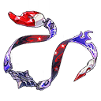

추천 광추
추궁할 수 없는 곳을 향해
치명타 확률·광역 필살기 이후 피해·포인트
효과 자세히
치명타 확률 +12%. 필살기 후 스킬·필살기 피해 +60%(3턴). 에너지 140pt 이상 소모 필살기 → 포인트 +1pt.
오늘도 평화로운 하루
에너지 상한에 비례한 피해 증가
효과 자세히
전투 진입 후 에너지 최대치에 따라 가하는 피해가 증가: 에너지 1pt당 0.4% 증가. 최대 160pt까지 계산한다
은하철도의 밤
적 수에 따른 공격력·격파 후 피해
효과 자세히
필드에 적이 1기 있을 때마다 공격력이 9% 증가. 해당 효과 최대 중첩수: 5스택. 적의 약점이 격파될 시 가하는 피해가 30% 증가. 지속 1턴
멈추지 않는 연산
광역 명중 후 속도
효과 자세히
공격력 +12%. 명중한 적 1기당 공격력 +8%(최대 5스택). 3기 이상 명중 → 속도 +16%(1턴).
느낌 있는 아침 식사 루틴
피해·적 처치 공격력 보강
효과 자세히
가하는 피해가 24% 증가. 적 1기를 처치할 때마다, 공격력이 8% 증가. 해당 효과 최대 중첩수: 3스택
추천 유물
지식의 바다에 빠진 학자 4 · 이즈모 현세와 타카마 신국 2
- 머리
 주옵션HP부옵션치명타 확률 · 치명타 피해 · 공격력% · 속도
주옵션HP부옵션치명타 확률 · 치명타 피해 · 공격력% · 속도 - 손
 주옵션공격력부옵션치명타 확률 · 치명타 피해 · 공격력% · 속도
주옵션공격력부옵션치명타 확률 · 치명타 피해 · 공격력% · 속도 - 몸통
 주옵션치명타 확률 / 치명타 피해부옵션치명타 확률 (주옵션 제외) · 치명타 피해 (주옵션 제외) · 공격력% · 속도
주옵션치명타 확률 / 치명타 피해부옵션치명타 확률 (주옵션 제외) · 치명타 피해 (주옵션 제외) · 공격력% · 속도 - 다리
 주옵션속도부옵션치명타 확률 · 치명타 피해 · 공격력%
주옵션속도부옵션치명타 확률 · 치명타 피해 · 공격력% - 구체
 주옵션얼음 피해부옵션치명타 확률 · 치명타 피해 · 공격력% · 속도
주옵션얼음 피해부옵션치명타 확률 · 치명타 피해 · 공격력% · 속도 - 매듭

주옵션공격력%부옵션치명타 확률 · 치명타 피해 · 속도
이 조합을 추천하는 이유
학자와 이즈모에 속도 신발을 사용합니다.
지식의 바다에 빠진 학자 4 · 이즈모 현세와 타카마 신국 2
- 머리
주옵션HP부옵션치명타 확률 · 치명타 피해 · 공격력% · 속도
- 손
주옵션공격력부옵션치명타 확률 · 치명타 피해 · 공격력% · 속도
- 몸통
주옵션치명타 확률 / 치명타 피해부옵션치명타 확률 (주옵션 제외) · 치명타 피해 (주옵션 제외) · 공격력% · 속도
- 다리
주옵션공격력%부옵션치명타 확률 · 치명타 피해 · 속도
- 구체
주옵션얼음 피해부옵션치명타 확률 · 치명타 피해 · 공격력% · 속도
- 매듭 주옵션공격력%부옵션치명타 확률 · 치명타 피해 · 속도
이 조합을 추천하는 이유
행동 보조 및 2돌 조건에서 공격력 신발을 선택합니다.
이 정도면 잘 키웠다
선택한 세팅 기준 · —는 확인된 수치 없음
- 종결 명함·전광
학자와 이즈모에 속도 신발을 사용합니다.
| 스탯 | 추천 스탯 | 준종결 | 종결 |
|---|---|---|---|
| 공격력 | 3000[1]얼음 피해 구체 기준. | — | 3000 |
| 속도 | 133.4+ | — | — |
| 치명타 확률 | 88% | — | 88% |
| 치명타 피해 | 120% | — | 200% |
세팅 기준·출처
별도 준종결 목표는 확인되지 않았습니다. 종결 표는 기본적으로 명함·전용 광추 기준입니다.
스탯 조건과 각주
- 공격력 · 추천 스탯 얼음 피해 구체 기준. ↑
성혼과 추천 돌파
성혼 1은 해독을, 성혼 2는 강화 스킬 횟수와 자기 행동을 보강합니다. 먼저 지식 동료를 확보하세요.
1강화 스킬의 해독 계산 추가·초기화 후 15스택추천
강화된 전투 스킬이 해독 스택 수 계산 시, 추가로 주목표 및 인접한 목표 중 스택이 가장 높은 목표의 현재 해독 스택 수의 50%를 계산한다. 강화된 전투 스킬을 발동해 해독 초기화 시 스택 수가 15스택으로 초기화된다
2전투·필살기에서 영감 +1·강화 스킬 후 행동 35% 당김추천
더 헤르타가 전투 진입 및 필살기 발동 후 추가로 영감을 1스택 획득. 강화된 전투 스킬 발동 후, 더 헤르타의 다음 행동 게이지가 35% 증가
3전투 스킬 +2 · 특성 +2
전투 스킬 +2 · 특성 +2
4지식 동료 속도 +12%
파티 내 「지식」 운명의 길 캐릭터의 속도가 12% 증가
5필살기 +2 · 일반 공격 +1
필살기 +2 · 일반 공격 +1
6얼음 저항 관통 +20%·적 수가 적을수록 필살기 배율 상승
더 헤르타의 얼음 속성 저항 관통이 20% 증가. 필드 위 적의 수량이 3 이상/2/1일 시 필살기의 피해 배율이 140%/250%/400% 증가
추천 파티


기본 운영과 행적
기본 운영
별도의 지식 동료를 배치해 팀 치명타 피해와 해독 지원을 활성화하세요. 필살기 후 강화 스킬의 주 대상을 해독이 높은 적으로 지정합니다.
행적 우선순위
특성 ≥ 전투 스킬 = 필살기 > 일반 공격. 파티에 다른 지식 동료가 있을 때 적용되는 행적을 해금하세요.
아하 속도 계산기 →